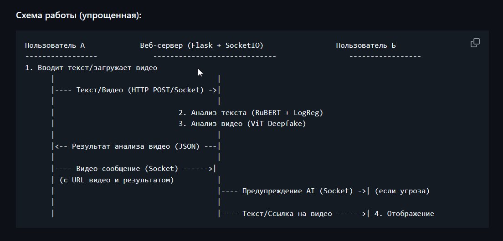
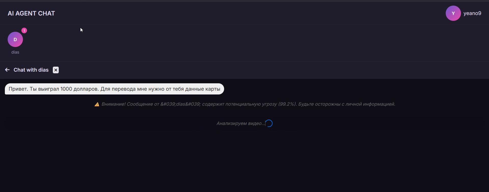

Artificial Intelligence Technology and Applications
A deep dive into applied AI and Machine Learning
Course Mission
- Build a robust theoretical and practical foundation in AI, ML, and Deep Learning.
- Develop the necessary skills to achieve HCIA-AI certification.
- Transition from theoretical understanding to building real-world AI applications.
Course Completed
My Motivation
Driven by a passion for AI's transformative potential, I embarked on this journey to not only learn but to create. This course was a critical step in building the expertise needed to develop intelligent systems that can solve tangible problems.
Course Content & Learning Outcomes
Core Modules Explored
- AI Fundamentals & History: Tracing the evolution of AI from concept to modern applications.
- Machine Learning: In-depth study of supervised, unsupervised, and reinforcement learning algorithms.
- Deep Learning: Understanding neural networks, CNNs for image processing, and RNNs for sequential data.
- Python & Frameworks: Gaining proficiency in Python, Jupyter, TensorFlow, and key data science libraries.
Key Skills Acquired
- A clear, practical distinction between AI, Machine Learning, and Deep Learning.
- Hands-on experience in implementing, training, and evaluating ML models.
- Advanced data preprocessing, feature engineering, and visualization techniques.
- Problem-solving skills for debugging and optimizing model performance.
Practice Project: Image Classification
Technologies Used
Python, Scikit-learn, Matplotlib
Implementation Process
- Data Handling: Loaded and preprocessed the Iris dataset, ensuring data quality and readiness.
- Model Development: Built and trained both K-Nearest Neighbors (KNN) and Logistic Regression models.
- Evaluation: Assessed model accuracy and performance using metrics like confusion matrix and classification reports.
Core Concepts Mastered
- The critical impact of data preprocessing and feature scaling on model accuracy.
- The power of data visualization for exploratory data analysis and result interpretation.
- Practical techniques for debugging models and fine-tuning hyperparameters for better performance.
Hackathon Project: AI AGENT
Your Digital Bodyguard
An innovative system designed to protect users from digital fraud by combining text analysis and deepfake video detection. The goal is to provide a comprehensive security layer for online communications.
- Text Analysis: Utilizes RuBERT to analyze messages for phishing and scam attempts.
- Deepfake Detection: Employs a Vision Transformer (ViT) model to detect manipulated video content.
- Real-time Alerts: Integrated into an interactive chat to provide instant warnings.


Deeper Understanding & Critical Analysis
Key Technical Insights
- From Data to Decisions: A deep understanding of how raw data is transformed into actionable predictions.
- The "Why" Matters: Realized that model interpretability is often as important as its accuracy.
- Valuable Failures: Gained experience in identifying and correcting common issues like overfitting, data leakage, and sampling bias.
Critical & Ethical Thinking
- Beyond the Code: AI is not just about training models; it's about asking the right questions and correctly framing the problem.
- AI Ethics: Acknowledged the profound ethical implications of AI, including potential biases and societal impact.
Conclusion & Future Steps
Foundation for the Future
This course provided the essential bedrock for my continued growth in the AI field. I've moved from theory to practice, gaining confidence in my ability to build and deploy intelligent systems.
- Acquired key skills in building and evaluating ML/DL models from scratch.
- Achieved proficiency in Python and its ecosystem of data science libraries.
- Honed teamwork and project management skills in a collaborative environment.
My Personal Roadmap
- Advanced Frameworks: Deepen my expertise in PyTorch for more complex and custom model architectures.
- Portfolio Development: Actively contribute to and create new projects on GitHub to showcase my skills.
- Competitive AI: Continue to participate in AI hackathons and competitions to solve challenging problems.
Technology Stack & Resources
Core Libraries & Frameworks
- Python: Primary language for all backend and AI logic.
- PyTorch & Transformers: For loading and running state-of-the-art AI models.
- Scikit-learn: Used for training the text classification model.
- OpenCV & Pillow: For video and image processing in the deepfake detection pipeline.
- Flask & SocketIO: Powered the interactive web application for the hackathon.
- HTML5/CSS3/JS: Built the frontend interface for this presentation.
Information & Learning Sources
- Hugging Face Hub for AI models and documentation.
- PyTorch Documentation for framework specifics.
- Scikit-learn User Guide for ML algorithms.
- Towards Data Science for articles and tutorials.
- Stack Overflow for community-driven problem-solving.
- MDN Web Docs for frontend technologies.